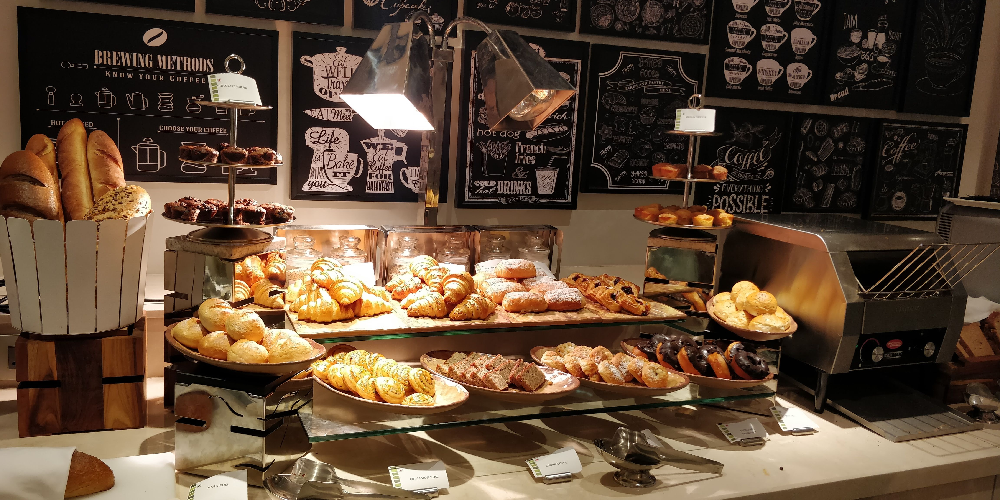

Padaria Natureza
Desde 2000, o lugar mais gostoso da cidade.
A padaria Natureza iniciou as suas atividades em 2000, nosso objetivo é aprimorar os processos de qualidade, da panificação e a confeitaria em geral. Através da grande variedade de pães, bolos, salgados, folhados, pizzas, doces e tortas confeitadas que ofereceremos, destacamos a relação com nossos clientes, pautada na fidelidade, esse é o orgulho do nosso trabalho.
Aqui você encontra desde um delicioso pãozinho para o café da manhã, como outras deliciosas opções para suas diversas refeições. Oferecemos produtos variados como pães, salgados, bolos e muito mais. Tudo com fabricação própria e com garantia de um bom serviço e atendimento.

Veja alguns de nossos produtos abaixo
Pães
Temos um processo de fabricação 100% caseiro. Esse foi um dos maiores motivos que fizeram com que a Padaria Natureza crescesse com as proporções que temos hoje. Temos um pão único de pura qualidade.

Bolos
Uma viagem para a Itália nos fez conhecer alguns ingredientes que são essenciais para que a massa do bolo fique macia e gostosa. Hoje temos um produto incomparável.

Contato
Estamos localizados na Rua Raul Mourão Guimarães - Buritis
Nosso telefone: (31) 99999-9999
Estamos funcionando nos seguintes horários:
Segunda à sexta: 7h às 16h
Sábados e domingos: 7h às 13h
Feriados: 8h às 12h